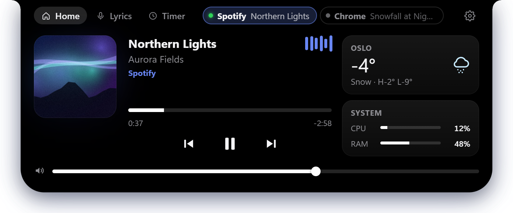
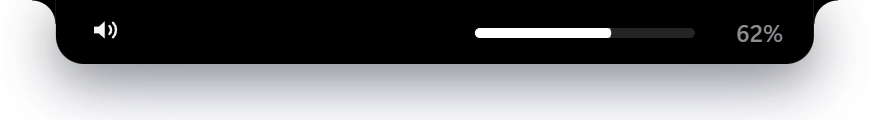
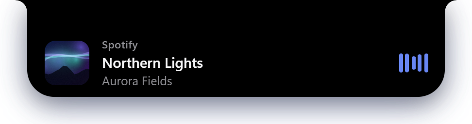
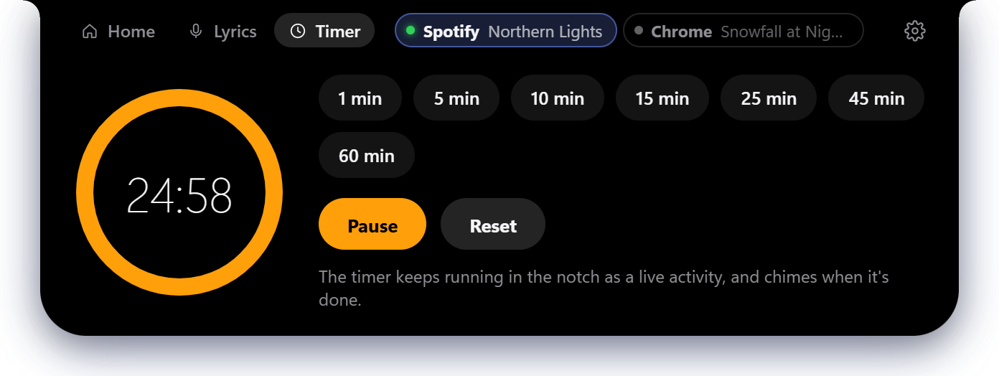
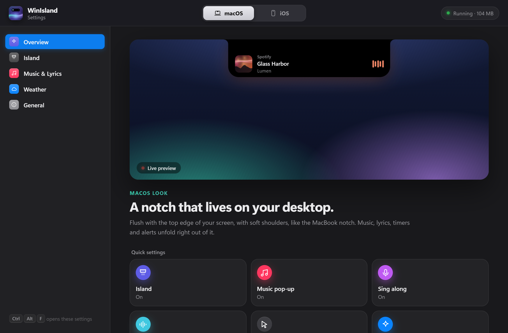
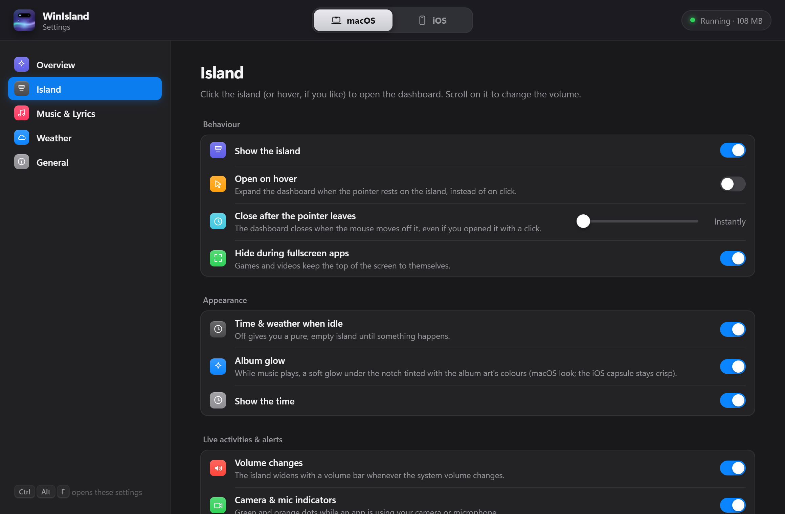
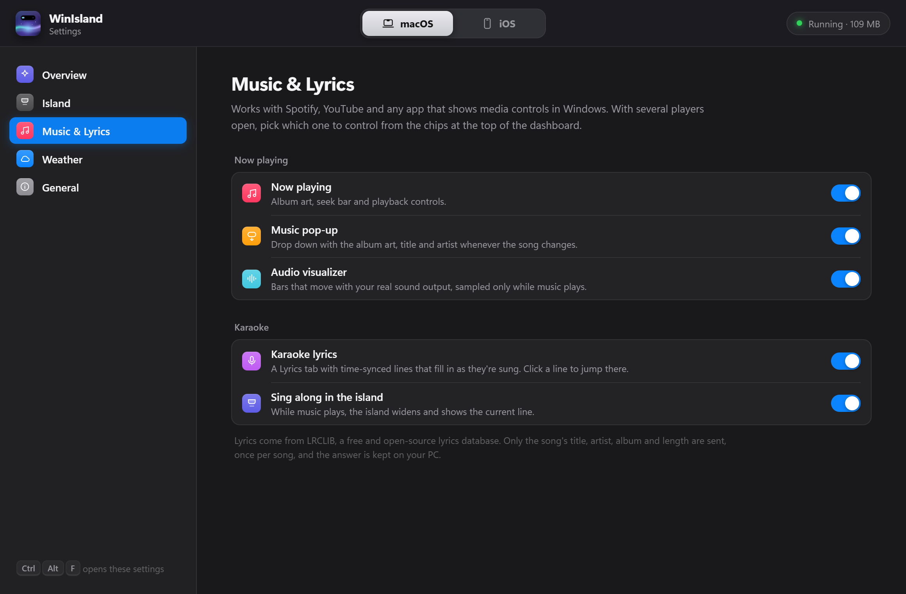

Free · 49 MB · Windows 11, 64-bit · No account, no admin rights
9:41
Live: the real WinIsland interface, running in your browser.
≈ 0%CPU while idle. Every update is event-driven
~210 MBPrivate memory, host + WebView2 processes
49 MBOne download, everything included
0 accountsNo sign-in, no tracking, per-user install
Two looks
One island. Two personalities.
Switch here, or anytime from the top of the Settings window. The island morphs in place; everything else stays the same.
macOS look
macOS
Selected
Flush with the top edge of your screen, with soft concave shoulders, just like the MacBook notch. An album-tinted glow appears beneath it while music plays.
Notch attached to the top edge
Bars for CPU and memory
Album-tinted glow while music plays
iOS
Selected
A capsule floating just below the edge, like the Dynamic Island on iPhone. Rounder shapes, a sky-coloured weather widget, activity rings and iOS-style tabs and sliders.
Crisp floating capsule, no shadow
Activity rings for CPU and memory
iOS segmented tabs and sliders
Features
Everything you glance at, in one place.
Small when nothing is happening. Alive when something is.
Now playing, beautifully
Album art, a seek bar you can click, playback controls and a visualizer that moves with your real sound output. In the macOS look, a soft glow under the island takes on the colours of the cover.

Spotify and YouTube, side by side
With several players open, chips at the top of the dashboard let you pick which one you're controlling.
SpotifyNorthern LightsChromeSnowfall at Night
Weather & activity rings
Current conditions from Open-Meteo, plus CPU and memory, sampled only while the dashboard is open.
−4°Snow · Oslo
Volume HUD
The island widens with a volume bar whenever the volume changes. Scroll on it to adjust.

Camera & mic indicators
A green dot while an app uses your camera, orange for the microphone, checked against apps that are actually running.
9:41
Song-change pop-up
When the track changes, the island drops down with the cover, title and artist. You can switch it off.

Timers as live activities
Start a timer from the dashboard and it keeps counting in the island, with a chime when it's done.

Feather-light by design
No polling loops. Media, volume, camera and display changes arrive as Windows events. It hides during fullscreen games and videos, and when your screen is locked.
Idle CPU≈ 0%
Private memory, all processes~210 MB
Music with visualizer< 1%
Karaoke lyrics
Sing along, line by line.
Time-synced lyrics fill in as they're sung, right in the dashboard. Click any line to jump there. Turn on Sing along and the island itself shows the current line while music plays.
Works with Spotify, YouTube and any app with Windows media controls
Lyrics from LRCLIB, a free and open-source database
Only the song's title, artist, album and length are sent, once per song, and the answer is kept on your PC
Live lyrics
Settings
One settings window. Two islands.
The macOS / iOS switch lives in the toolbar. Flip it and the island morphs between notch and capsule in the live preview, while the window stays familiar.
WinIsland Settings


IslandBehaviour, alerts and what shows when idle

Music & LyricsPop-up, visualizer, glow and karaoke
Install
Up and running in seconds.
A proper setup wizard: pick your look, choose where it goes, set a few preferences and you're done. It installs just for you and removes itself cleanly from Windows Settings → Apps.
Download
49 MB, everything included
System
Windows 11, 64-bit
Needs
Microsoft Edge WebView2 Runtime (built into Windows 11)
Yes. There's no account, no subscription and nothing to unlock.
Which music apps work?
Anything that shows up in the Windows media controls: Spotify, YouTube and other sites in your browser, the Media Player app, VLC, TIDAL and more. If several are open, pick one from the chips at the top of the dashboard.
Where do the lyrics come from?
From LRCLIB, a free and open-source lyrics database. WinIsland sends only the song's title, artist, album and length, once per song, and keeps the answer on your PC. You can turn lyrics off in Settings → Music & Lyrics.
Will it slow down my PC?
No. It reacts to Windows events instead of polling, so it uses about 0% CPU when nothing is happening and around 210 MB of private memory across its processes (the host plus WebView2). It hides itself during fullscreen games and videos.
Do I need administrator rights?
No. Setup installs WinIsland just for your user account, in your own AppData folder, and registers it in Windows Settings → Apps so you can uninstall it like any other app.
What do I need to run it?
Windows 11, 64-bit, with the Microsoft Edge WebView2 Runtime, which is built into Windows 11. The download is 49 MB with everything included.
Can I switch between the macOS and iOS look later?
Anytime. The switch sits at the top of the Settings window (Ctrl + Alt + F), and the island morphs in place.
Does it work with multiple monitors?
The island lives at the top of your main display, and it steps aside while a fullscreen app is running there.
How do I uninstall it?
Open Windows Settings → Apps → Installed apps, find WinIsland and choose Uninstall. Everything it added (files, shortcuts and the autostart entry) is removed. You can choose to keep your settings.
Give your desktop an island.
Free for Windows 11. Installs in seconds, uninstalls cleanly.